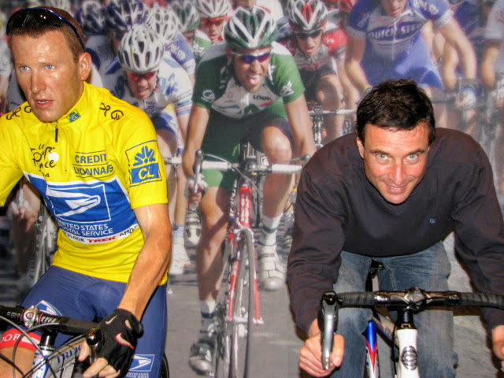

Why I'm Riding
Holland Park Synagogue is one of the few synagogues in inner London that provides a spiritual home for members of the Sephardi community, and a welcoming place for families and individuals to connect with their heritage and culture.
For many, it is an important social centre where community life continues, traditions are maintained across generations, and new people are always welcome.
The need for security has increased significantly. This is essential but costly, and it makes it difficult to cover everyday running costs.
I’m cycling 100 miles to help raise funds so that the synagogue can continue to focus on what matters most: supporting its community.
About Holland Park Synagogue
Holland Park Synagogue is a vibrant community hub that provides spiritual guidance, educational opportunities, and social support to its members. Your sponsorship will help sustain these important initiatives.
The Ride
I’ll be cycling 100 miles in a single ride to raise money for Holland Park Synagogue. It’s a long-distance challenge that will take several hours and require steady effort throughout the day.
I’ll be riding some challenging hills across London, covering a full 100 miles in one go.
It’s not a race. The goal is to complete the distance and raise as much support as possible from generous sponsors.
Sponsor Me
Thank you for taking the time to read this.
I’m cycling 100 miles to help raise funds so that the synagogue can continue to focus on what matters most: supporting its community.
If you’re able to sponsor me, I’d be very grateful.